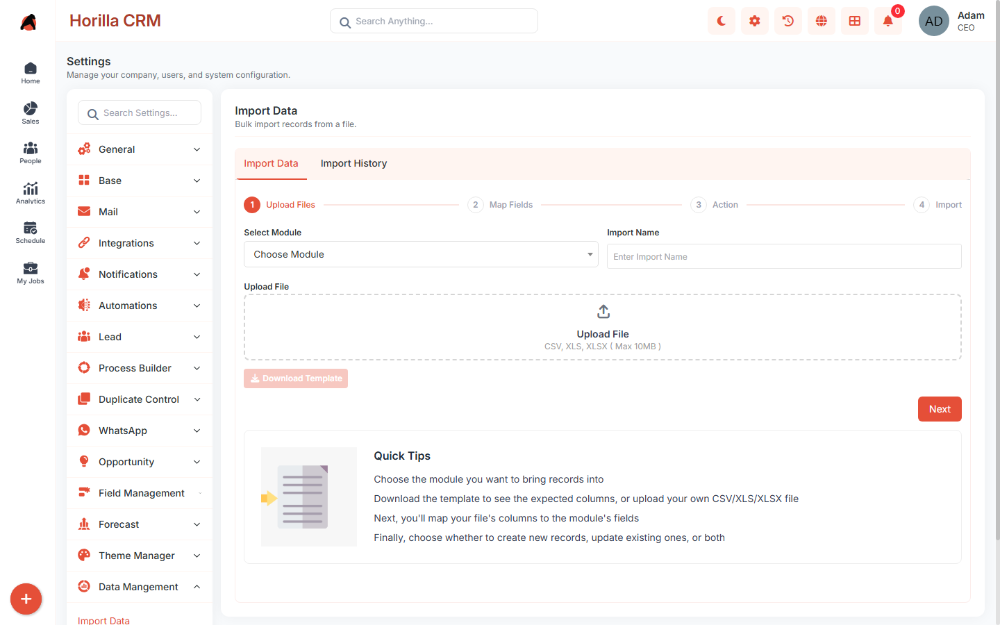
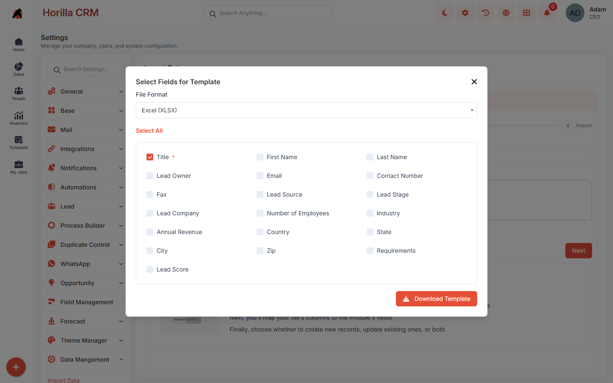
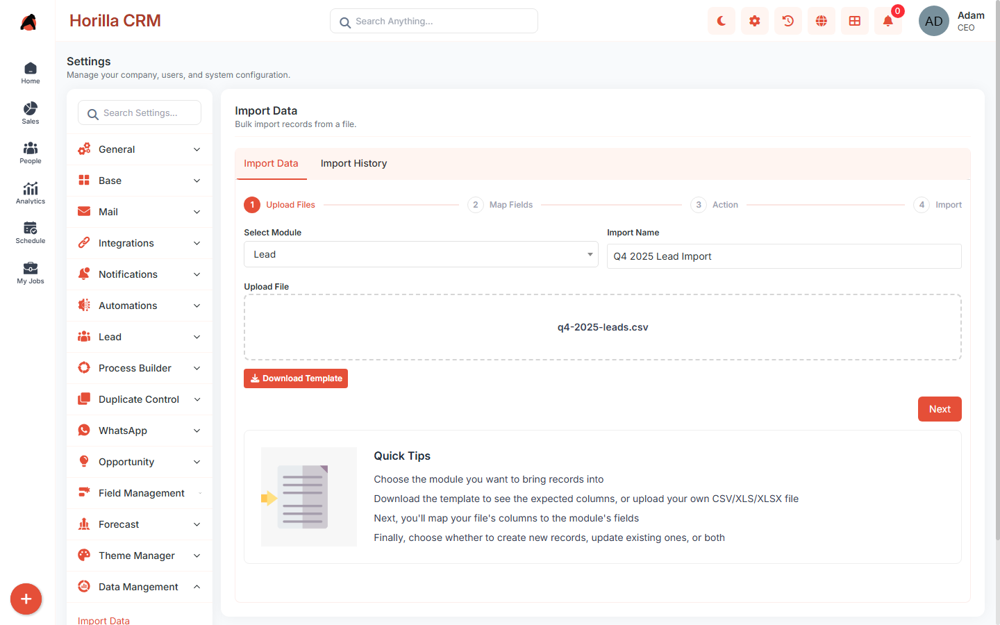
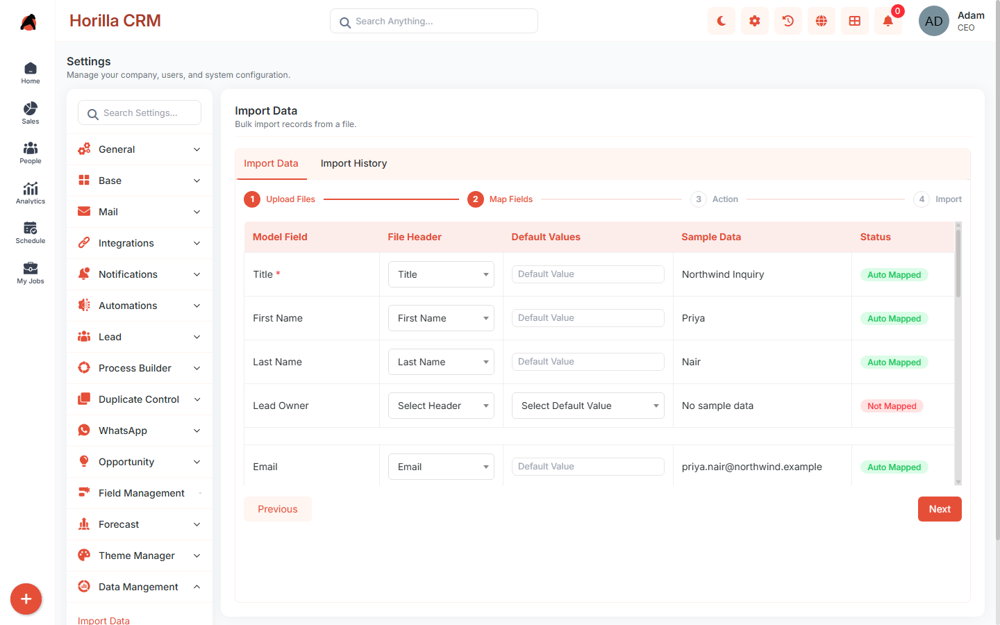
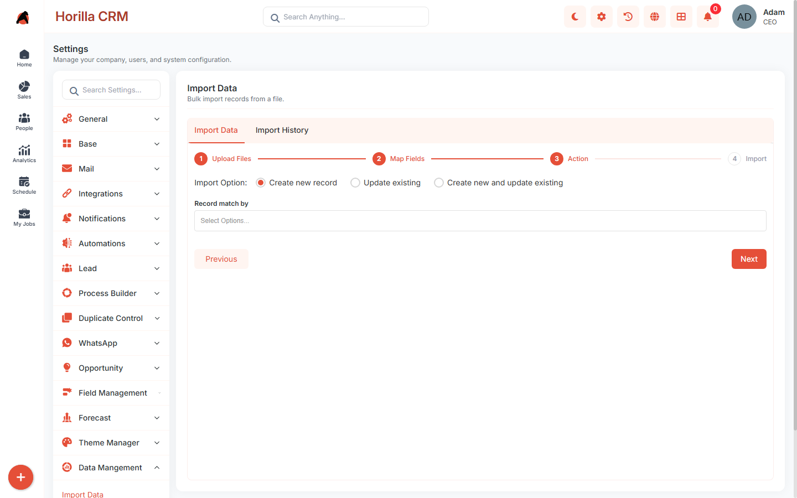
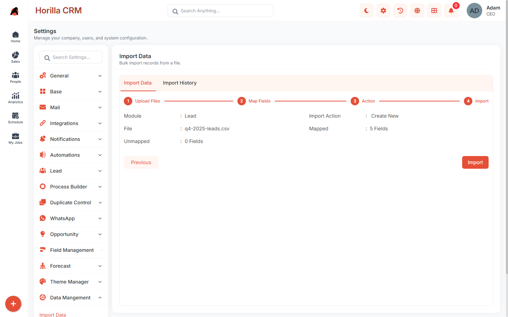
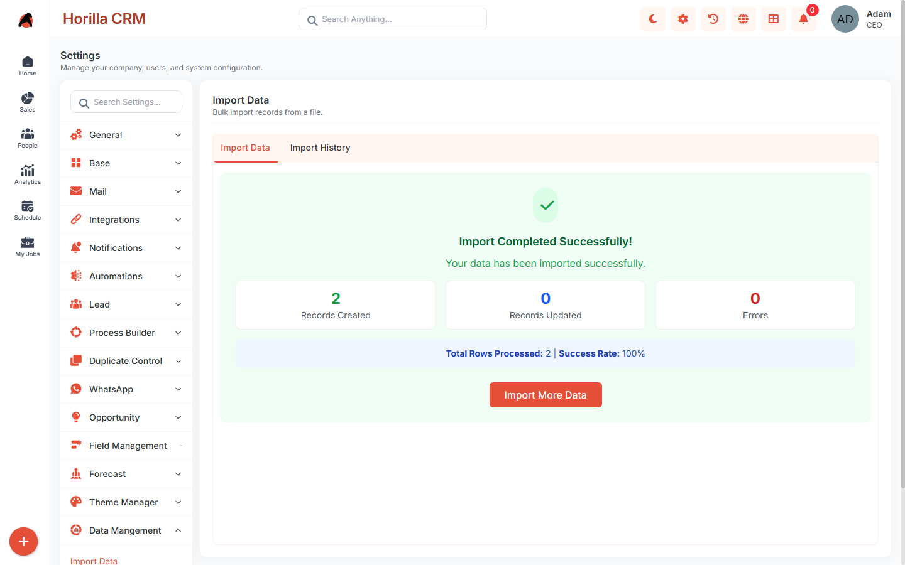
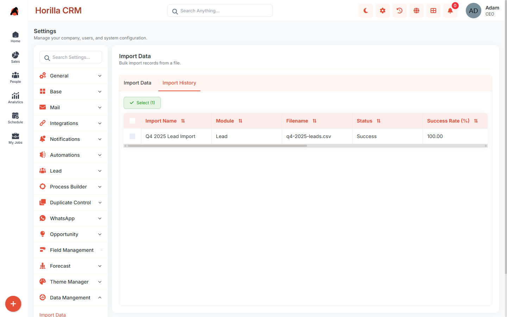

Introduction
The Import Data module moves external data into the CRM from spreadsheets and other sources. It supports the Leads, Accounts, Contacts and Opportunities modules and offers a structured import wizard, field mapping, value mapping for choice fields and a downloadable template generator, with the aim of accurate, duplicate-free data migration.
Key Features and Functionalities
1.1 Import wizard overview
Purpose: guide users step by step through an efficient import.
Access: Settings → Data Management → Import Data.
The Import Data interface has two tabs:
- Import Data: starts a new import.
- Import History: shows past imports and their logs.

1.2 Download import template
Purpose: provide a pre-formatted file with the correct column headers for the chosen module.
- Click Download Template on the Import Data page.
- Select the Module — Lead, Account, Contact, Opportunity and so on.
- Choose which fields to include. Required fields are pre-selected and cannot be deselected.
- Select the file format: CSV or XLSX.
- Click Download to get the template.

1.3 Upload file
Purpose: start the import by choosing a module and uploading the source file.
- Choose the Module.
- Enter an Import Name, for example "Q4 2025 Lead Import".
- Upload the data file. CSV, XLS and XLSX files are supported.
- Click Next once the file has been validated.

1.4 Map fields
Purpose: match the columns in the file to CRM fields.
| Column | Contents |
|---|---|
| Model Field | Name of the CRM field. |
| File Header | Matching column in the uploaded file. |
| Default Value | Fallback used for fields that are not mapped. |
| Sample Data | Preview of the data taken from the file. |
| Status | Mapping progress for the field. |
- Fields marked with
*are required. - Fields whose names match are mapped automatically.
- Fields shown as Not Mapped need manual mapping or a default value.
Value mapping for choice and relation fields
- Appears for fields with fixed choices, such as Lead Source or Industry, and for foreign key fields.
- The unique values found in the file are listed, each to be mapped to a CRM option.
- Values whose names match are mapped automatically.
- Values left unmapped can be assigned manually or allowed to fall back to the default value.
Click Next once all required fields are mapped.

1.5 Action configuration
Purpose: decide how new and existing records are handled.
| Import option | Behaviour |
|---|---|
| Create New Records | Adds every row as a new record. |
| Update Existing | Updates records that already exist. |
| Create New and Update Existing | Does both. |
Record Match By sets the field used to match records when updating or combining; the options are Email, Company Name, Phone Number and Unique Identifier. Click Next to continue.

1.6 Import summary
Purpose: review the settings before the import runs.
- The chosen Module, the uploaded File Name and the selected Import Action.
- Counts of Mapped and Unmapped fields.
Click Import to start.

1.7 Import completion
Purpose: report the results once the import has run.
- Import Statistics: Records Created, Records Updated and Errors.
- Processing Summary: total rows processed and the success rate.
From here you can click Import More Data to start another import, visit the related module to review the imported records, or check Import History for the logs.

1.8 Import history
Purpose: track import activity for review, auditing and error recovery.
Access: the Import History tab on the Import Data page.
| Detail | Contents |
|---|---|
| Import Name | Name given when the import was run. |
| Module | CRM module the data was imported into. |
| Original Filename | Name of the uploaded file. |
| Status | Completed or Failed. |
| Success Rate | Percentage of rows imported successfully. |
| Duration | How long the import took. |
| Created At | Date and time of the import. |
| Created By | User who ran the import. |
| Imported File | Download of the original file. |
| Error File | Download containing only the failed rows with their error details, so they can be corrected and re-imported. |
